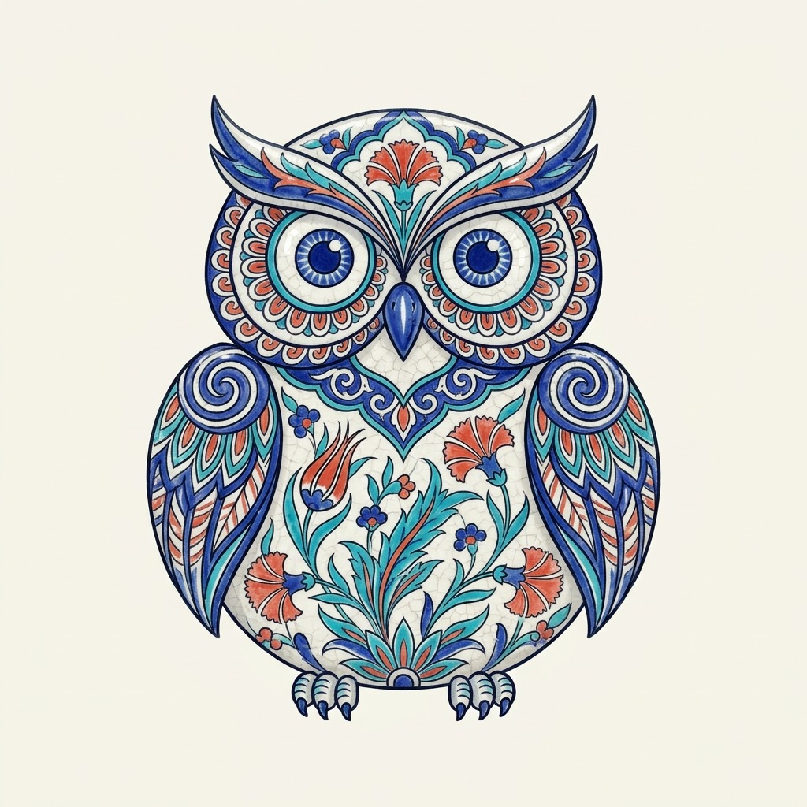
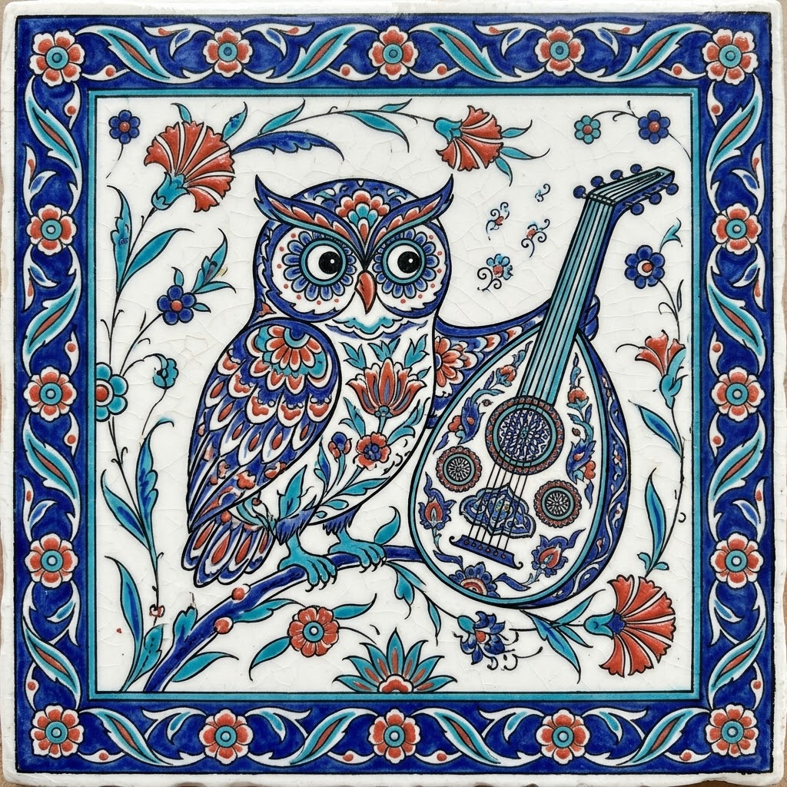
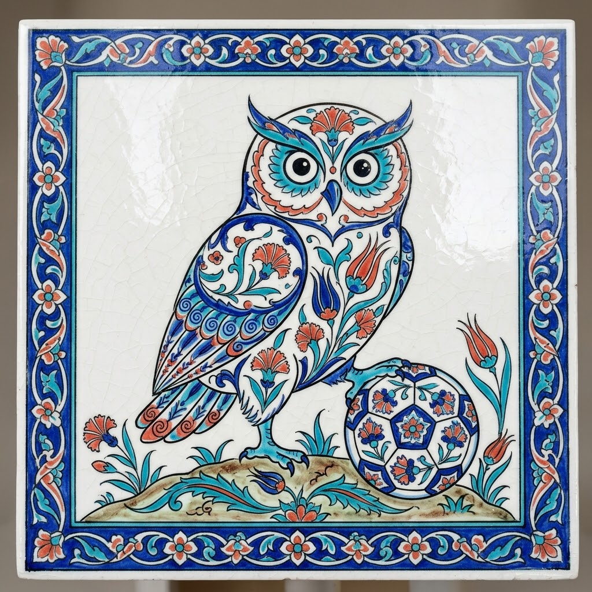
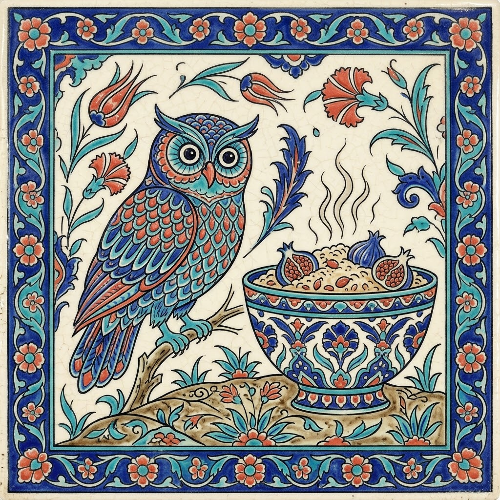

The Mascot
Night Owl
A watchful companion guiding every corner of Gorkem's space.

01 / Interest
Music
Resonant strings, timeless melodies, and the quiet pull of rhythm.

02 / Interest
Sports
Momentum, open air, and the sharp focus of the pitch.

03 / Interest
Food
Warm bowls, rich craft, and flavors worth lingering over.
